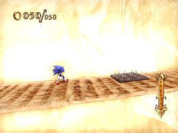
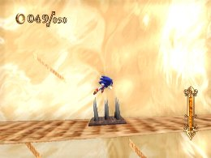
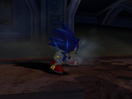
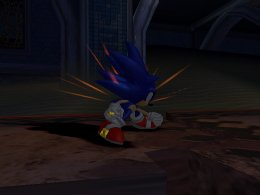

ジャンプの活用
基礎編
ひみリンの重要な要素として「ジャンプ」が挙げられます。
その「ジャンプ」にも大きく分けて、小ジャンプ、中ジャンプ、大ジャンプの３つの性質があります。
「小ジャンプ」
2ボタンをちょんと押すと飛べるジャンプのことで、高さの低い障害物やトゲパネルのトラップを回避するのに便利なジャンプです。

ボタンを押してから0.25秒以内に離すと小ジャンプ
「中ジャンプ」
2ボタンをある程度長く押すと飛べるジャンプで、足場の飛び移りやマジンにホーミングアタックをする時に便利な、使用用途が高いジャンプです。

チャージエフェクトが赤になる前に離すと中ジャンプ
「大ジャンプ」
2ボタンを長く押し、チャージジャンプを最大まで溜めた状態でジャンプのことで、高い障害物や高い場所に登ることが出来るジャンプです。

最大チャージまでの所要時間は0.5秒
中ジャンプや大ジャンプ、ホーミングアタックの着地後にソニックの動きがゆっくりになることがあります。早く走り出すまでに時間がかかってしまう為、ゆっくり歩き始めた場合は、小ジャンプをすることで、多少スピードを早くすることが出来ます。
« はじめに | 基礎編 | ブレーキテクニック »